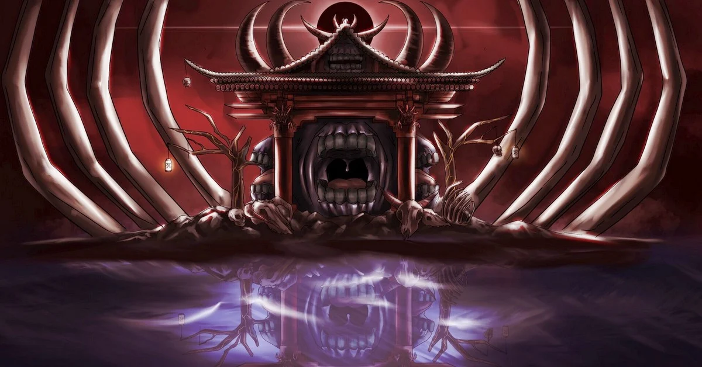

Sobre esse Quiz
O Quiz de Jujutsu Kaisen é um site interativo dedicado aos fãs do popular anime e mangá. Ele oferece uma série de perguntas desafiadoras sobre personagens, enredo, habilidades e momentos icônicos da série.
Com questões que vão desde os detalhes mais óbvios até os mais profundos, o quiz permite que os participantes testem seu conhecimento sobre o universo de Jujutsu Kaisen.Ao final, você recebe uma pontuação, além de ter a chance de compartilhar seus resultados com amigos e outros fãs
É uma maneira divertida e envolvente de mostrar o quanto você conhece o mundo de Jujutsu e seus
Qual é o nome da técnica amaldiçoada de Gojo Satoru que manipula o espaço?
Quem é o "Rei das Maldições"?
Qual é a palavra-chave usada por Toge Inumaki para ativar suas técnicas amaldiçoadas?
Qual foi o ano que lançou o anime de Jujutsu?
Qual é o nome dos alunos que seguem o mentor Satoru Gojo na Tokyo Jujutsu High?
Qual é o nome da escola onde Yuji Itadori estuda para se tornar um feiticeiro jujutsu?
Quem é esse personagem?
Quem usa essa Expansão de Domínio?

Tabela de pontuação
| Pontuação | Avaliação |
|---|---|
| 0-2 | Não desista, Você pode conseguir um melhor resultado da próxima vez. |
| 3-4 | Você ainda precisa melhorar. |
| 5-7 | Seu conhecimento sobre Jujutsu Kaisen está bom. |
| 8 | Perfeito! seu conhecimento está excelente. |
| Obrigado por participar! | |
Verifique suas respostas
Clique aqui para verificar suas resposta
- Limite Infinito
- Ryomen Sukuna
- Salmon
- 3 de outubro de 2020
- 1.Yuji Itadori 2. Megumi Fushiguro 3. Yuta Okkotsu
- Tokyo Jujutsu High
- Geto
- Sukuna